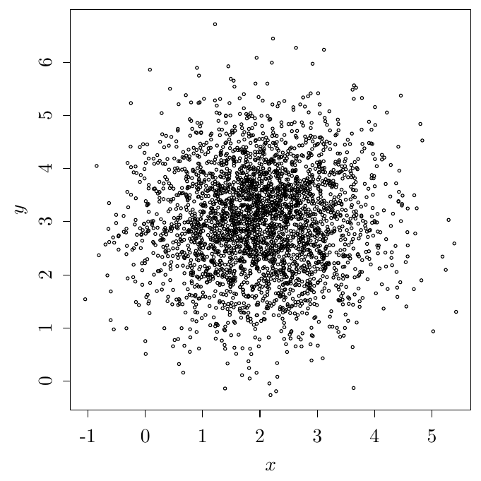

01wk-2: 확률, 평균과 평균
1. 강의영상
2. 확률 잘 아세요?
- “확률”이라는 단어를 우리는 일상적으로 어떻게 쓰는가?
- 내일 비가 올 확률은?
- 우리나라가 다음 월드컵 결승에서 우승할 확률은?
- 이 강의에서 내가 A+를 받을 확률은?
- 이러한 확률은 합리적인가? 아니면 좀 어색하다고 느껴지는가? 어색하다면 왜 그런가?
합리적이라고 볼 만한 쪽
- 사람들이 실제로 그렇게 쓰고, 그렇게 써서 소통이 된다. 내일 비올 확률이 70퍼센트라고 하면 상대가 우산을 챙긴다.
- 숫자가 클수록 더 그럴 법하다는 뜻이라는 데 대부분의 사람들이 동의한다.
어색하다고 볼 만한 쪽
- 반복이 없다. “내일 비가 올 확률”이라는 문장에서, 같은 내일이 여러 번 오지 않는다.
- 사람마다 값이 다르다. 갑은 0.7 이라 하고 을은 0.4 라 하는데 누가 맞는지 정할 길이 없다.
- 맞았는지 확인이 안 된다. 내일 비가 와도, 안 와도, 어제 말한 70퍼센트가 맞았는지 틀렸는지 갈리지 않는다.
- 아예 잴 수가 없는 것 아닌가 하는 느낌도 있다.
# 가짜예제1 – 엑스노트 (가만히 생각해 보니까 좀 이상하네?)
reference: 김용대 교수님 수업시간에 들은 예제
질문1: 위의 그림을 가장 적절히 설명한 진술은 무엇이라고 생각하는가?
- 신민아가 고층빌딩에서 엑스노트를 벽면유리에 테잎을 붙여 프레젠테이션을 하고 있다.
- 젊은 여성이 노트북을 활용하여 프레젠테이션을 하고 있다.
- 여성이 프레젠테이션을 하고 있다.
질문2: 위의 진술이 맞을 “확률”을 생각해보자. 1, 2, 3 가운데 어느 것이 참일 확률이 가장 높은가?
#
# 가짜예제2 – 가짜예제1의 미러링
아래의 그림을 관찰하자.

질문1: 다음 중 그림을 가장 잘 묘사한 것은?
- \(x\)축의 평균은 2이다.
- \(y\)축의 평균은 3이다.
- 평균은 \((2,3)\)이다.
- 평균은 어딘가에 있다. 즉 평균은 \((x_0,y_0)\) 인데 \(x_0 \in \mathbb{R}, y_0 \in \mathbb{R}\).
질문2: 진술 1-4가 맞을 확률은?
#
3. 평균과 평균
- 피셔(1922): 통계학이 왜 발전이 없는지 알어? 하나의 이유는 용어가 정확하지 않아서 그래.
# 예제3 – 애매한 언어
- 질문1: 공평한 동전을 던진다고 하자. 앞면이 나오면 \(X=0\), 뒷면이 나오면 \(X=1\)이라고 할 때 \(X\)의 평균은 얼마인가?
- 질문2: 그 동전을 5번 던져 \((0,1,0,0,1)\)을 얻었다고 하자. 평균은 얼마인가?
#
- 피셔(1922): 사람들은 추정의 대상인 참값(모수)과, 추정 방법을 통해 도출된 값(추정치)에 같은 이름을 붙이는 관습이 있다.
| 구분 | 진실의 세계 | 데이터의 세계 |
|---|---|---|
| 성격 | 추정의 대상인 참값 (true value) | 추정 방법을 통해 우연히 도달한 특정 값 (particular value at which we happen to arrive) |
| 용어 | 모수 (parameter) | 추정치 (estimate) |
| 평균 | 모평균 \(\mu\) | 표본평균 \(\bar{x}\) |
| 표준편차 | 모표준편차 \(\sigma\) | 표본표준편차 \(s\) |
# 예제4 – 명확한 언어
- 질문1: \(p=0.5\)인 베르누이 시행을 상상하자. (공평한 동전을 던진다고 하자.) \(X\sim B(p)\)일 때 모평균 \(\mathbb{E}(X)\)는 얼마인가?
- 질문2: \(X_1,\dots,X_5 \overset{i.i.d.}{\sim} B(0.5)\)의 관측값이 \[(x_1,x_2,x_3,x_4,x_5)=(0,1,0,0,1)\]일 때 표본평균 \(\bar{x}=\frac{1}{5}\sum_{i=1}^{5}x_i\)는 얼마인가?
#
# 예제5 – 애매한 언어
평균이 0이고 표준편차가 1인 정규분포가 있다고 하자. 즉
\[X \sim N(\mu, \sigma^2), \qquad \mu = 0, \quad \sigma = 1\]
이고, 아래는 이 분포에서 10개의 자료를 뽑은 결과이다. 다시 말해 \(X_1,\dots,X_{10} \overset{i.i.d.}{\sim} N(0,1)\)의 관측값 \(x_1,\dots,x_{10}\)이다.
set.seed(123)
x = rnorm(10)
x [1] -0.56047565 -0.23017749 1.55870831 0.07050839 0.12928774 1.71506499
[7] 0.46091621 -1.26506123 -0.68685285 -0.44566197x의 평균과 표준편차는 아래와 같이 계산한다.
\[\bar{x} = \frac{1}{n}\sum_{i=1}^{n} x_i, \qquad s = \sqrt{\frac{1}{n-1}\sum_{i=1}^{n}(x_i-\bar{x})^2}\]
mean(x)
sd(x)[1] 0.07462564
[1] 0.9537841즉 \(\bar{x} = 0.0746\), \(s = 0.9538\) 이다. 10개가 아니라 더 많은 자료를 뽑으면 어떻게 될까? 이번에는 \(n = 10000\)이다.
set.seed(123)
x = rnorm(10000)
c(mean(x), sd(x))[1] -0.002371702 0.998636635\[n=10 \;:\; \bar{x} = 0.0746,~ s = 0.9538 \quad \longrightarrow \quad n=10000 \;:\; \bar{x} = -0.0024,~ s = 0.9986\]
평균은 점점 평균에 가까워지고, 표준편차는 점점 표준편차에 가까워진다. (뭐라는 거야..??)
해보기! 아래 표에서 ???의 값을 채워 보자.
| 진실의 세계 | 데이터의 세계 (\(n=10\)) | 데이터의 세계 (\(n=10000\)) |
|---|---|---|
| 모평균 \(\mu=???\) | 표본평균 \(\bar{x}=???\) | 표본평균 \(\bar{x}=???\) |
| 모표준편차 \(\sigma=???\) | 표본표준편차 \(s=???\) | 표본표준편차 \(s=???\) |
답
| 진실의 세계 | 데이터의 세계 (\(n=10\)) | 데이터의 세계 (\(n=10000\)) |
|---|---|---|
| 모평균 \(\mu=0\) | 표본평균 \(\bar{x}=0.0746\) | 표본평균 \(\bar{x}=-0.0024\) |
| 모표준편차 \(\sigma=1\) | 표본표준편차 \(s=0.9538\) | 표본표준편차 \(s=0.9986\) |
#
# 예제6 – 베르누이
아래의 상황을 가정하자.
\[X_1,X_2,X_3 \overset{i.i.d.}{\sim} B(0.5)\]
이로부터 데이터를 아래와 같이 얻었다고 하자.
set.seed(123)
rbinom(3, size = 1, prob = 0.5)[1] 0 1 0즉 \((x_1,x_2,x_3)=(0,1,0)\) 이다.
| 진실세계의 정보 | 데이터세계의 정보 |
|---|---|
| \(X_1,X_2,X_3 \overset{i.i.d.}{\sim} B(0.5)\) | \((x_1,x_2,x_3)=(0,1,0)\) |
#
# 예제7 – 이변량 정규분포
이제 \(n=3000\)에 대하여 아래의 상황을 생각하자.
- \(X_1,\dots,X_n \overset{i.i.d.}{\sim} N(2,1)\)
- \(Y_1,\dots,Y_n \overset{i.i.d.}{\sim} N(3,1)\)
- \(X_i \perp Y_j, \quad \forall i,j \in \{1,2,\dots,n\}\)
아래의 코드로 데이터를 얻었다.
set.seed(123)
x <- rnorm(3000) + 2
y <- rnorm(3000) + 3
plot(x, y)이 경우 진실의 세계와 데이터의 세계는 아래와 같이 생각할 수 있다.
- \(X_1,\dots,X_n \overset{i.i.d.}{\sim} N(2,1)\)
- \(Y_1,\dots,Y_n \overset{i.i.d.}{\sim} N(3,1)\)
- \(X_i \perp Y_j, \quad \forall i,j \in \{1,2,\dots,n\}\)
#
- 중요한 통찰
- 통찰1: 진실의 세계에서 데이터의 세계로 넘어가려면 관측이 필요하다.
- 통찰2: 진실의 세계에서 데이터의 세계로 넘어갈 때만 “확률”이라는 개념이 적용된다. 즉 확률은 반드시 아래와 같은 개념으로만 사용되어야 한다.
\[ \text{진실의 세계} \overset{\text{관측, 확률}}{\Longrightarrow} \text{데이터의 세계} \]
- 통찰3: 데이터의 세계는 반복 관찰이 가능하다.
4. 역확률
# 예제8 – 지지율
어떤 후보의 지지율을 \(p\) 라고 하자. 유권자 100명에게 물어 40명이 지지한다고 답했다.
\[X_1,\dots,X_{100} \overset{i.i.d.}{\sim} B(p), \qquad \sum_{i=1}^{100} x_i = 40\]
이때 표본에서 계산한 지지율은 \(\bar{x}=0.40\) 이다.
- 질문1: 이 예제에서, “지지율이 0.35와 0.45 사이일 확률은 얼마인가?” 라는 물음은 자연스러운가?
- 질문2: 이 예제에서, “지지율”은 \(p\) 인가 \(\bar{x}\) 인가?
두 세계가 한 낱말에 겹쳐 있다.
| 진실의 세계 | 데이터의 세계 | |
|---|---|---|
| 기호 | \(p\) | \(\bar{x}\) |
| 값 | 하나로 고정 | 표본마다 바뀐다 |
| 확률을 매길 수 있나 | 없다 | 있다 |
| 그런데 부르는 이름은 | 지지율 | 지지율 |
- \(\bar{x}\) 는 표본을 다시 뽑으면 값이 바뀐다. 그러니 “\(\bar{x}\) 가 0.35와 0.45 사이일 확률” 은 말이 된다.
- \(p\) 는 고정된 하나다. 반복해서 관찰하는 대상이 아니다. 그래서 “확률”이라는 말은 어색하다.
요약: “지지율이 이 구간에 있을 확률” 이라는 문장이 말이되는지 안되는지는 지지율이 \(p\)를 의미하는 \(\bar{x}\)를 의미하는지 판단해야 가능함 \(\Rightarrow\) 그런데 일반인은 그런말을 판단하기 어렵고, 따라서 지지율이 \(p\)를 의미할때에도 확률이라는 용어를 잘못사용하는 경우가 많은 \(\Rightarrow\) 그러나 많은 문헌에서 등장하는 이러한 확률이라는 용어는 사실 역확률을 의미함. 확률/역확률을 대부분의 문헌에서 섞어 쓰기 때문에 통계의 발전이 어려움 (평균이 평균으로 수렴한다는 식의 진술을 해야하니까)
#